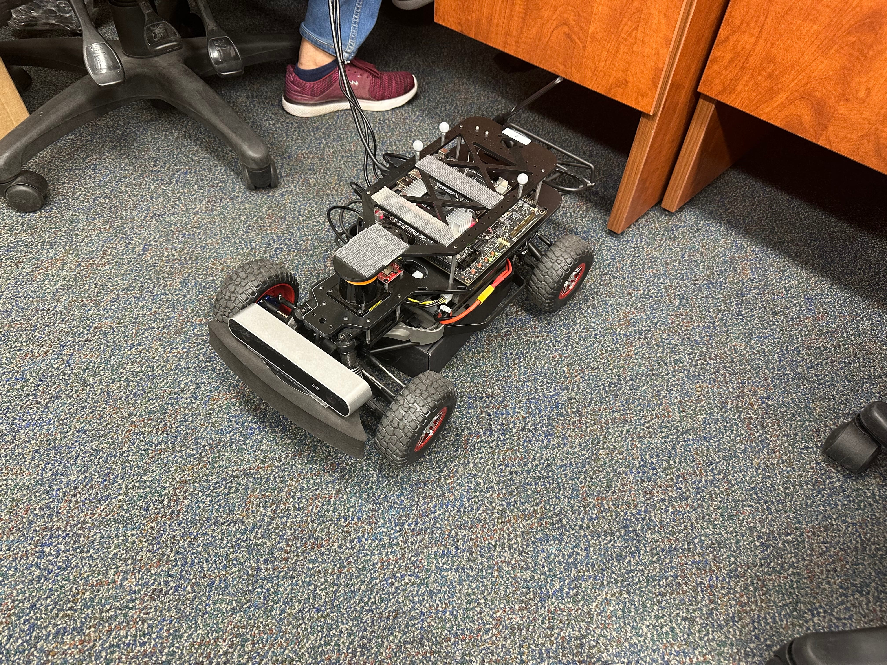
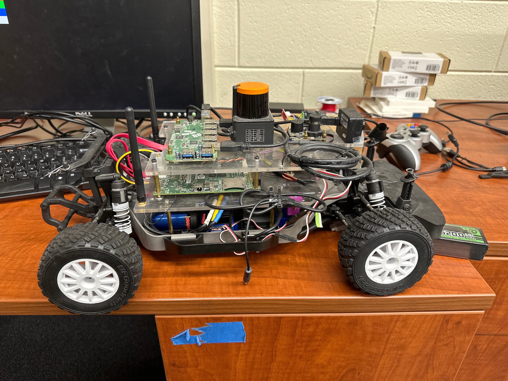
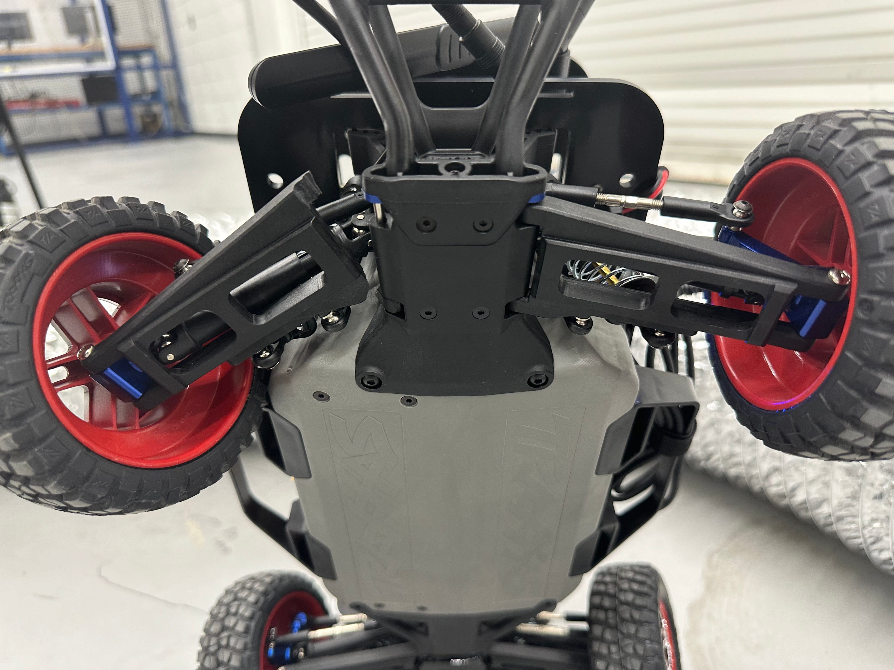
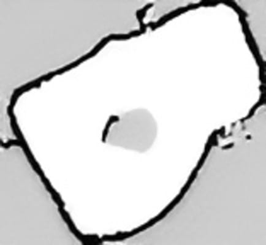
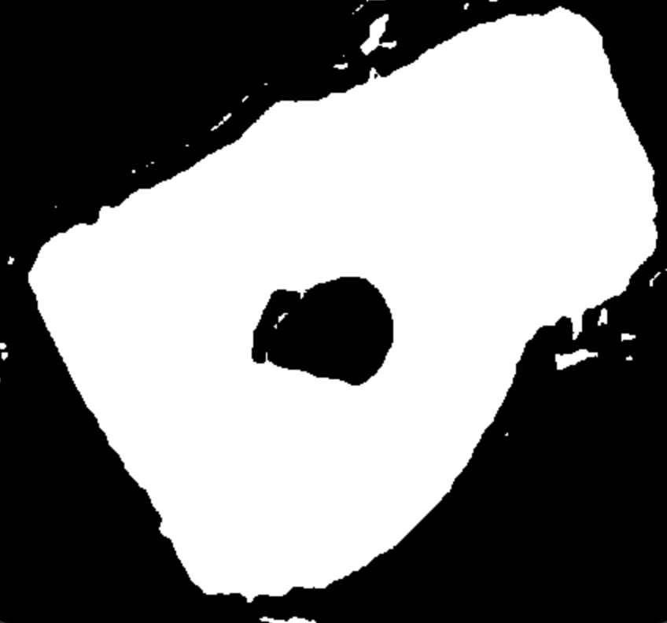
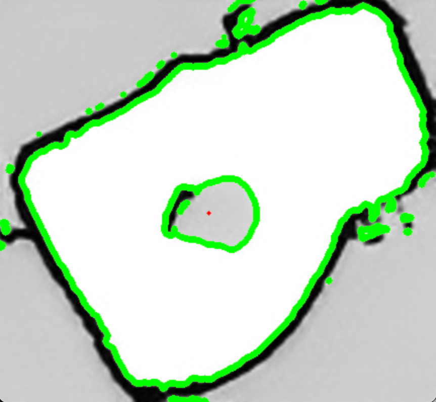
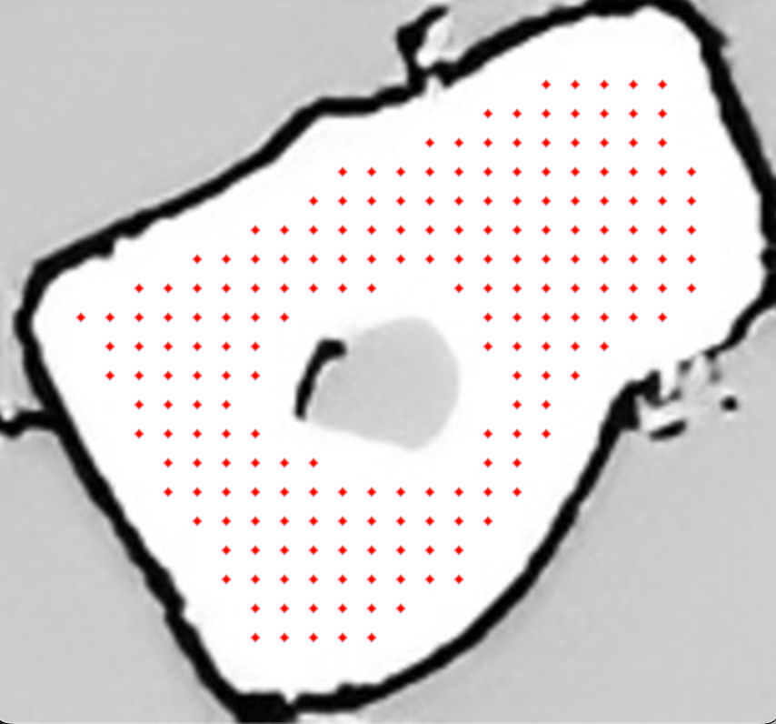
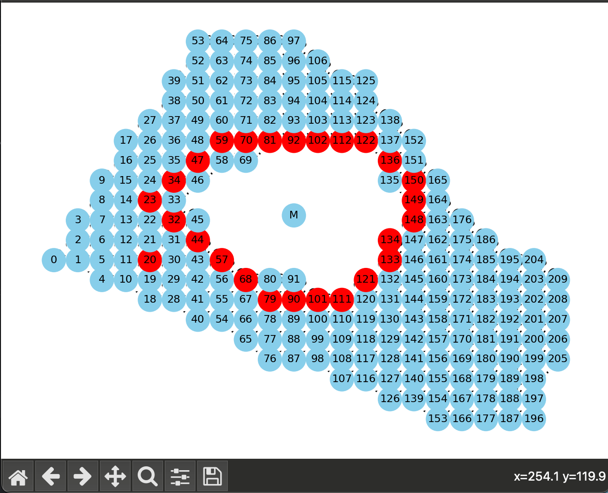
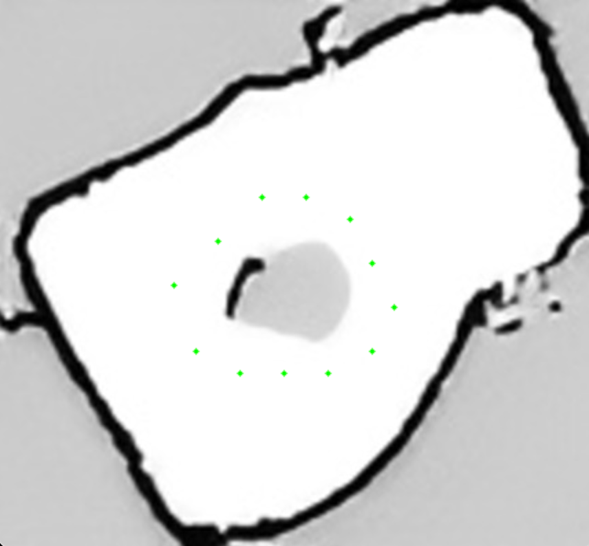

Autonomous Vehicles Research
Skills: ROS, Python, C, Linux, Git (version control)
Overview
This is ongoing research at Georgia Tech’s Vertically Integrated Projects (VIP) program on Active Safety for Autonomous and Semi-Autonomous Vehicles. Each semester builds on the last, working toward a fully autonomous racing pipeline. Over two semesters I progressed from reactive LIDAR-based algorithms to a full mapping and localization pipeline, and then shifted focus to improving lap times through better pure pursuit controllers.
My latest contribution is an offline adaptive pure pursuit controller that pre-computes look-ahead distances and velocities from a pre-generated raceline, achieving up to a 62.1% reduction in lap time over the static baseline.
Table of Contents
- Where it started — RC cars & background
- Semester 1 — Reactive algorithms & SLAM experiments
- Semester 2 — Full mapping pipeline & first pure pursuit
- New work — Dynamic pure pursuit controllers
- Results summary
1. Where It Started
I’ve always been drawn to building things that move on their own. Before joining the VIP program, I built a remote-controlled tank powered by a Raspberry Pi that operated over WebSockets, where Xbox controller signals were sent to a public server and relayed directly to the tank, meaning it could be driven from anywhere in the world with Wi-Fi. It also had a live camera feed.
The F1TENTH Car
The platform used in the VIP program is on a completely different scale. It features an Nvidia Jetson Nano, a Hokuyo UST-10LX LIDAR, and a ZED stereo camera, and it moves fast enough that crashes are very real. We had large, open lab spaces to test and iterate in.



2. Semester 1 — Reactive Algorithms & SLAM Experiments
Reactive Controllers
My first semester focused on Follow the Gap and the Disparity Extender, both reactive algorithms that use LIDAR to find the largest open gap and steer toward it. Since the car has no memory of the track, it recomputes the best direction from scratch every cycle.
Reactive methods work well on simple tracks, but fall apart on more complex geometry. The car commits to a direction too late and hits the wall. A major goal going forward was to move beyond this limitation by giving the car a map it could plan from.
Here’s an early wall-following test, one of the first algorithms I wrote:
SLAM & Raceline Generation Experiments
Wanting to go beyond reactive control, I started exploring Hector SLAM to build a map. The output was a PGM (black-and-white image) file, which wasn’t directly usable for path planning. I designed a pipeline on top of it using OpenCV to extract a driveable raceline:
- Segment walls vs. driveable surface using OpenCV (images 2–3)
- Sample candidate waypoints within the driveable surface (image 3)
- Build a directed graph where edges enforce forward progress (image 4)
- Trace a raceline through the graph (images 5–6)
(Images upscaled for readability. Image 1 is the raw SLAM output.)






Localization wasn’t reliable enough yet to run this on the real car, so by the end of semester 1 we fell back to the reactive gap-following algorithm for the final showcase. It worked by targeting the largest open gap while keeping the car away from walls, scaling speed based on gap distance.
3. Semester 2 — Mapping Pipeline & First Pure Pursuit
Semester 2 focused on getting a reliable end-to-end pipeline working: SLAM Toolbox for mapping and localization, then VipPathOptimization to turn the occupancy grid into a raceline the car could actually follow. This proved harder than expected, and getting consistent localization took most of the semester.
Once it was working, we implemented our first pure pursuit controller: the car picks a look-ahead point on the raceline a fixed distance ahead and steers toward it. It got the car around the track, but with a fixed look-ahead and constant velocity it was clearly the bottleneck.
The car was doing everything right, it had a map, a raceline, a localization estimate, but the controller wasn’t using any of that information to go fast. That was the motivation for the next step.
4. New Work — Dynamic Pure Pursuit Controllers
How much can you improve lap times just by making the pure pursuit controller smarter? I designed and evaluated two controllers against a static baseline (fixed 1.0 m look-ahead, constant 0.65 m/s).
Controller 1: Reactive Dynamic Pure Pursuit
This controller computes look-ahead distance and velocity in real time based on the curvature of the path ahead. Tighter turns shorten the look-ahead and lower the speed; straighter sections do the opposite.
Curvature κ is estimated at each waypoint using finite-difference approximations, then filtered with a dead zone (κdeadzone = 0.5, treating gentle curves as straight) and normalized. Nonlinear scaling functions convert it to control values, square root for look-ahead (less aggressive, preserves stability) and cubic for velocity (aggressive slowdown in tight turns only, fast everywhere else).
Baseline (16.27 s):
Reactive Dynamic Pure Pursuit (11.87 s, 27% faster):
A key limitation: laps weren’t consistent. At higher speeds, small path deviations compound and the car drifts into walls. The velocity profile also collapsed into effectively two states, minimum speed in turns, maximum everywhere else, because the curvature penalty dominated any intermediate values. More fundamentally, this controller still reacts rather than plans. It doesn’t take full advantage of already having the map.
Controller 2: Offline Adaptive Pure Pursuit
This is the main contribution. Instead of computing look-ahead and velocity on the fly, this controller pre-computes them offline from the VipPathOptimization raceline before the car runs. The raceline provides position, heading, target velocity, curvature, and wall boundary distances at every waypoint, so the controller already knows the full trajectory ahead of time.
I implemented the Adaptive Look-Ahead method from Sukhil & Behl (2021), which evaluates multiple look-ahead candidates at each waypoint against three objectives:
- Maximum exit velocity, prefer look-ahead distances that maximize speed through each point
- Minimum trajectory deviation, prefer distances that keep the car close to the reference path
- Convex combination, β · velocity + (1−β) · deviation, where β is tuned per track geometry
The boundary data also enables a safety shutoff when the car’s heading suggests it’s about to hit a wall.
Circular Track
In the baseline video, notice how much track width the car uses, it’s fighting to stay within bounds. The offline controller is noticeably tighter.
Baseline (15.41 s):
Offline Adaptive Pure Pursuit (7.24 s, 53% faster):
Track with Straightaways
Baseline (21.8 s):
Offline Adaptive Pure Pursuit (8.25 s, 62% faster):
Mixed Track
The static baseline couldn’t complete this track without crashing. The offline controller ran it in 6.83 seconds:
Results Summary
| Track | Static Baseline | Reactive Dynamic PP | Offline Adaptive PP |
|---|---|---|---|
| Test run | 16.27 s | 11.87 s (↓27%) | — |
| Circular | 15.41 s | — | 7.24 s (↓53%) |
| Straightaway | 21.80 s | — | 8.25 s (↓62%) |
| Mixed | DNF | — | 6.83 s |
Future Work
- Tuning the offline adaptive controller across more tracks and parameter configurations
- Integrating adaptive look-ahead calculation directly with trajectory optimization, currently they are separate steps which can cause unstable behavior at high-speed entries into tight turns
- Exploring model predictive control (MPC) as a next step beyond pure pursuit